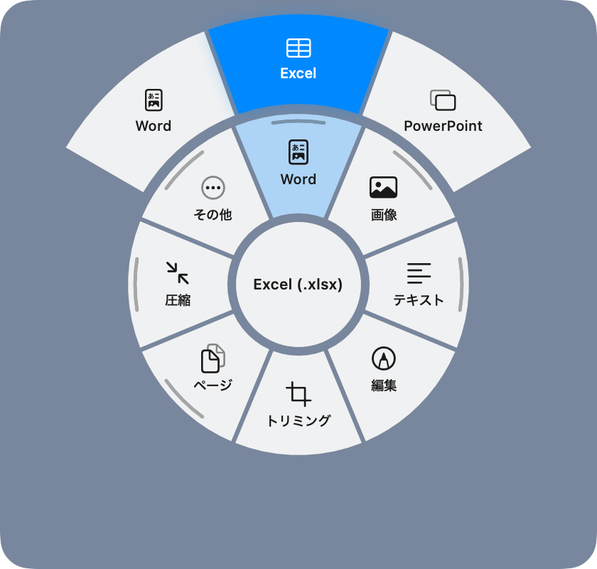
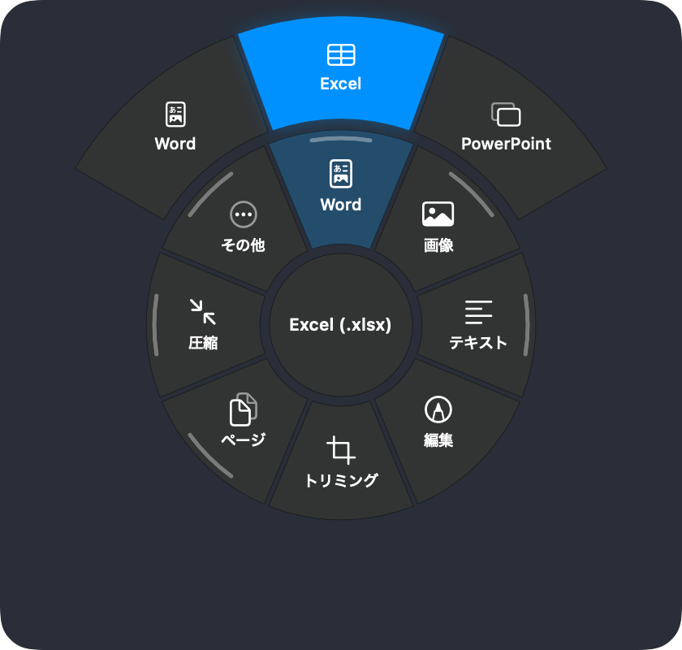

Convert and edit PDF and Word files without leaving Finder.
Right-click a file, or press and hold it on the desktop, to convert or edit it. Everything runs on your Mac. MaruDoc never sends your files anywhere.
The Mac App Store version is in preparation.
Install from Terminal
curl -fsSL https://marudoc.app/install.sh | sh
This downloads the same notarized DMG as the button above and checks its signature before installing. You can read the script at install.sh.
To have an AI agent do it, tell it to install MaruDoc and run this command. The permissions have to be turned on by you in System Settings.
Uninstall
curl -fsSL https://marudoc.app/install.sh | sh -s -- --uninstall


How it works
- Right-click a file and choose MaruDoc. Only the actions that make sense for that file are listed.
- Press and hold a file on the desktop. A ring of actions appears around the pointer; slide toward one and let go. Items with more choices open a larger outer ring. Let go in the centre and the menu stays open so you can click instead.
- Hands-on work such as cropping or marking up opens a small editor right next to the file.
Results are saved next to the original, and on the desktop they appear beside the original icon. Nothing is ever overwritten by a conversion, and in-place changes such as rotating can be undone right away.
What it does
| To Word, Excel, PowerPoint, images (PNG / JPEG / HEIC / TIFF), Markdown, text, HTML, RTF. Add and fix text, highlight, draw, shapes, white-out, redact, notes, signatures, crop, rotate / delete / reorder pages, combine, split, compress, OCR, passwords, page numbers, watermarks | |
| Images | To PDF, PNG, JPEG, HEIC, TIFF. Crop, rotate, resize, compress, remove background, recognise text, remove location data, adjust, mark up |
| Word | To PDF, Markdown, text, HTML, RTF, images. Edit with formatting |
| Markdown, text, HTML | To PDF, Word, each other, images. Edit in place |
| Excel, CSV | CSV and Excel both ways, PDF, Markdown tables, HTML, Word |
| PowerPoint | Text and images to PDF, Word, Markdown. Extract images |
| Several files | Combine PDFs and images into one PDF in the order you selected them, split PDFs (every page, by ranges, every N pages), convert / compress / resize in bulk |
Privacy
MaruDoc contains no networking code. Conversion, editing, text recognition and background removal all use frameworks built into macOS and run on your Mac. MaruDoc collects no usage data.
The Mac App Store version runs in the App Sandbox without network permission, so macOS itself guarantees it cannot connect. You can inspect the downloaded app's entitlements with codesign -d --entitlements - /Applications/MaruDoc.app.
Setup
MaruDoc walks you through this on first launch. For the right-click menu, turn on MaruDoc under System Settings, General, Login Items & Extensions, Finder. For the press-and-hold menu, turn on MaruDoc under Privacy & Security, Accessibility. Accessibility is used only to find the file you pressed and to follow the pointer.